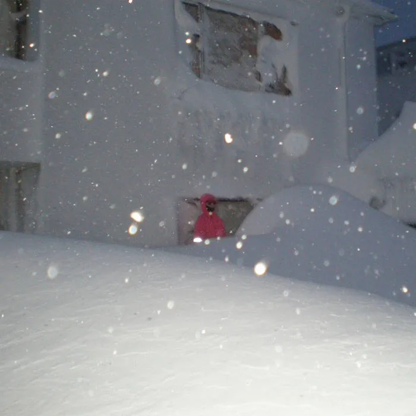

Skólavörðustígur 15 · síðan 1998
12 Tónar
Plötubúð, útgáfa og bar á Skólavörðustíg. Tvær hæðir af plötum, plötuspilari og espresso í boði hússins. Þú mátt hlusta á allt áður en þú kaupir.
Nýtt í rekkunum
Plötubúðin
Plötur
Allt sem hér stendur er til í búðinni á Skólavörðustíg og í netversluninni. Dragðu röðina til hliðar.
Opna netverslun
Verð og lager lesin úr netversluninni 31. júlí 2026.

Lagerinn
Í rekkunum
01 af 60 Apparat Organ Quartet Pólýfónía LP (Red Vinyl Limited Edition)
Þetta eru plötur sem búðin selur. Útgáfulisti 12 Tóna er annar listi og hann er hér fyrir neðan.
Sagan
Frá 1998
Tuttugu og átta ár í sömu búðinni á sama horninu, frá opnun að lista NME yfir bestu plötubúðir heims. Dragðu tímalínuna til hliðar.
Búðin opnar
Búðin opnar á Skólavörðustíg og verður fljótt samkomustaður tónlistarfólks í Reykjavík. Fólk kemur til að hlusta, ekki bara til að kaupa.
Útgáfan hefst
Búðin fer að gefa út sjálf. Meðal þeirra sem gefa út hjá 12 Tónum næstu árin eru Mugison, Jóhann Jóhannsson, Hildur Guðnadóttir, Ólöf Arnalds og Samaris.
Fyrsta sæti hjá NME
Blaðamaðurinn Marcus Barnes setur 12 Tóna í fyrsta sæti á lista NME yfir tíu bestu plötubúðir heims, sama ár og búðin verður tuttugu ára.
Barinn
Bar og kaffihús bætast við. Búðin verður staður sem fólk situr á, ekki bara staður sem það kemur í, og bakgarðurinn fyllist á tónleikakvöldum.
Tvær hæðir
Efri hæðin er djass og klassík, kjallarinn nýbylgja, indie og raftónlist. Þrjú hundruð og tuttugu titlar í rekkunum og opið alla daga vikunnar.
Útgáfan
Það sem búðin gefur sjálf út
Útgáfan hefur starfað frá 2003 og nærri áttatíu titlar hafa komið út. Meðal þeirra sem hafa gefið út hjá 12 Tónum eru Mugison, Jóhann Jóhannsson, Hildur Guðnadóttir, Skúli Sverrisson, Ólöf Arnalds, Eivör og Samaris.
Listinn hér fyrir ofan er lagerinn í búðinni. Þetta er útgáfan og það er annað.
NetversluninErtu með eitthvað sem við eigum að heyra?
Sendu okkur hlekk á tónlistina þína, eða komdu bara við. Það er plötuspilari á staðnum og espresso í boði hússins.